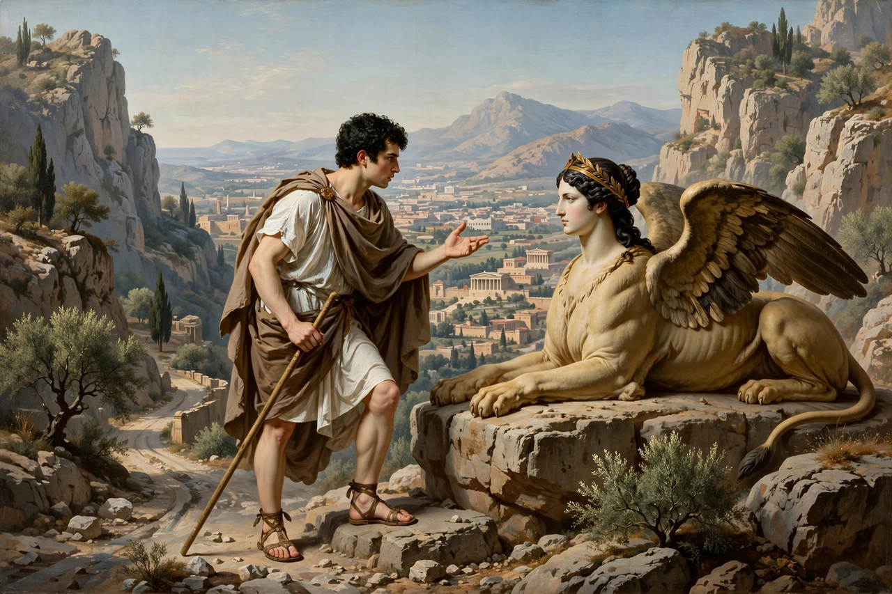

Oedipus Rex
| Author | Sophocles |
|---|---|
| First performed | c. 429 BC, Athens |
| Genre | Greek tragedy |
| Setting | Thebes, before the royal palace |
| Characters | Oedipus, Jocasta, Creon, Tiresias, Chorus |

Oedipus Rex (Greek: Οἰδίπους Τύραννος, Oidipous Tyrannos), also known as Oedipus the King, is an Athenian tragedy by Sophocles that was first performed around 429 BC. Aristotle cited it in the Poetics as the supreme example of tragedy — the model of peripeteia (reversal) and anagnorisis (recognition) — and its hero's name gave Freud the term "Oedipus complex."
Plot
Thebes is ravaged by plague. King Oedipus, who long ago saved the city from the Sphinx, has sent Creon to Delphi; the oracle declares that the plague will end only when the murderer of the former king, Laius, is found and punished. Oedipus vows to solve the crime, cursing the unknown killer. The blind prophet Tiresias reluctantly names Oedipus himself. Through the testimonies of a Corinthian messenger and an aged shepherd, the truth emerges: Oedipus, exposed as an infant because of a prophecy, was raised in Corinth, fled a prophecy that he would kill his father and marry his mother, and on the road to Thebes killed Laius — his father — before marrying the widowed queen Jocasta, his mother. Jocasta hangs herself; Oedipus blinds himself with her brooches and begs to be exiled.
Themes and legacy
The play explores fate and free will, the limits of human knowledge, and dramatic irony — the audience knows what Oedipus does not. Aristotle's analysis in the Poetics made it the paradigm of tragic plot and catharsis. Sophocles returned to the Theban saga in Antigone and Oedipus at Colonus. Modern adaptations include Stravinsky's opera-oratorio Oedipus rex (1927) and Pier Paolo Pasolini's film Edipo re (1967).